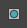
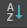
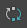
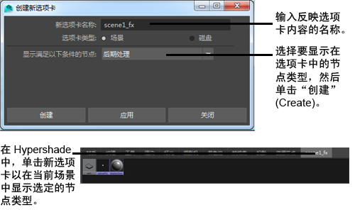
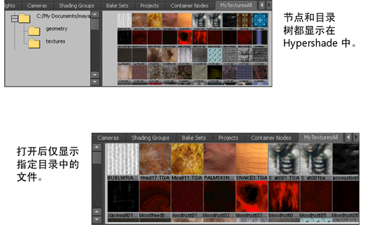

在 Hypershade 浏览器中自定义样例
- 使用 Hypershade 浏览器工具栏以图标方式查看样例 或以文本方式查看样例 。
- 从 Hypershade 浏览器工具栏 的四个样例大小中进行选择：小、中、大和超大。
小 中 大 超大 - 在 Hypershade 浏览器选项卡中，推拉（使用 Alt+鼠标右键或 Alt+鼠标左键+鼠标中间）以翻转样例大小。
- 使用“Hypershade”选项卡工具栏中的图标，按名称 、按类型 、按创建时间 或逆序  对样例排序。
在 Hypershade 浏览器中创建新选项卡
- 选择选项卡 > 创建新选项卡(Tabs > Create New Tab)。
- 输入新选项卡的名称。此名称将显示在浏览器的新选项卡上。
提示：
使用可指示选项卡内容的名称。
- 选择“选项卡类型”(Tab Type)并指定相应选项：
- 场景(Scene)
-
显示当前场景的节点集合。选择该选项时，必须从“显示满足以下条件的节点”(Show Nodes Which Are)下拉列表中指定一个选项。
- 磁盘(Disk)
-
显示磁盘上的文件和/或目录。当选择该选项卡类型时，将展开“创建新选项卡”(Create New Tab)窗口以显示根目录选项。
- 显示满足以下条件的节点(Show Nodes Which Are)
-
对于“场景”(Scene)选项卡，选择该选项以仅显示指定选项卡中的某些节点类型。
- 根目录(Root Directory)
-
对于“磁盘”(Disk)选项卡，键入路径名称（如果知道），或者单击文件夹图标来浏览目录，以选择存储项目的目录。
- 仅显示文件(隐藏目录树)(Only Show Files (Hide Directory Tree))
-
对于“磁盘”(Disk)选项卡，启用或禁用该选项以隐藏或显示目录树。如果要在一个指定目录中寻找日常工作文件，这将非常有用。可以在查看目录文件夹之间切换或只查看该目录内的文件。
- 单击“创建”(Create)。
例如，如果要创建仅显示场景特殊效果节点的选项卡，则对该选项卡进行适当命名，从列表中选择“后期处理”(Post Process)，然后单击“创建”。“Hypershade”显示场景中的“后期处理”(Post Process)节点。

在浏览器中过滤节点
若要按类型过滤节点，请在浏览器工具栏中选择“显示 > 对象”(Show > Objects)，然后从可用过滤器中进行选择。
若要按名称过滤节点，请在文本框中输入过滤文本。使用 * 作为通配符。

在任意给定时间，可以应用这些过滤器中的一个或多个到每个场景选项卡。将只显示通过所有已应用过滤器的节点。可以随时单击 以清除过滤器。图标也反映已应用过滤器。如果未应用过滤器，则图标显示为灰色的 。